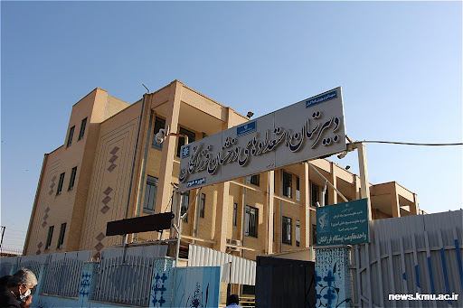

رزومه من
معرفی
من فاطمه سلیمانی 18 ساله از کرمان
در یک خانواده مذهبی چشم به جهان گشودم
دو برادر به نام های محد 24 ساله و امیر مهدی 12 ساله داذم
فارغ التحصیل از دبیرستان فرزانگان 2 کرمان هستم
و هم اکنون دانشجوی ترم اول مهندسی کامپیوتر هستم
با کلیک روی مشاهده میتوانید به سایت دانشکده ی من منتقل شوید
مشاهده
